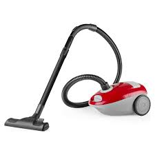

Aspiradoras
Las aspiradoras son electrodomésticos diseñados para aspirar y limpiar suciedad, polvo, pelos y otras partículas de diversas superficies en el hogar
La potencia y la capacidad de succión de una aspiradora determinan su eficacia para recoger la suciedad y el polvo de las superficies. Es importante elegir una aspiradora con suficiente potencia para las necesidades de limpieza de tu hogar.
Muchas aspiradoras vienen con sistemas de filtración avanzados que atrapan partículas de polvo y alérgenos, mejorando la calidad del aire en el hogar.
La capacidad del depósito de una aspiradora determina cuánta suciedad y polvo puede contener antes de necesitar ser vaciado. Es importante elegir un modelo con suficiente capacidad para evitar vaciar el depósito con frecuencia.
Muchas aspiradoras vienen con una variedad de accesorios y herramientas diseñadas para facilitar la limpieza de diferentes tipos de superficies y áreas.
